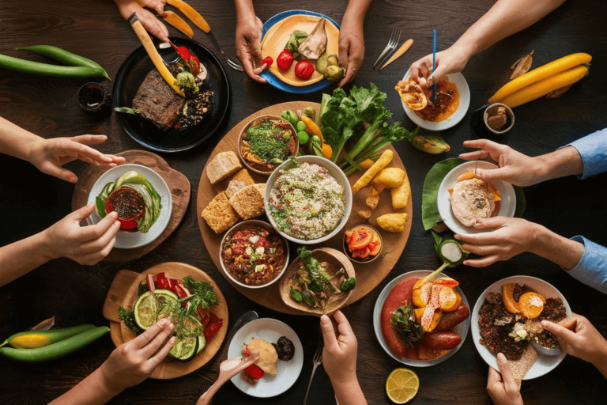

|  | A culinária brasileira é rica, saborosa e diversificada. Cada um dos estados brasileiros tem seus pratos típicos, preparados de acordo com antigas tradições, que são transmitidas a cada geração. O significado da comida ultrapassa o simples ato de alimentar-se. | |